The best Warhammer 40k Horus Heresy reading order, explained
What's the ultimate Horus Heresy book order? We've read all 65 (and the rest) to create this full, annotated list of Games Workshop's epic series - complete with expert summaries of each novel, and a curated reading order for each Legion, so you can follow your favorites from the very beginning, right through to the Siege of Terra.
If you're completely new to the Horus Heresy series, don't worry, you're in the right place - we'd recommend checking out our compendium of the Warhammer 40k primarchs and Warhammer 40k factions too, for some extra context to help you navigate these lore-dense novels.
All Horus Heresy novels in order
This is the official reading order for all the numbered Horus Heresy books, which were published between April 2006 and September 2019.
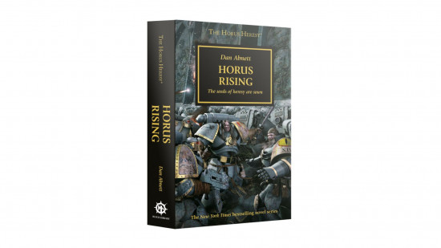
1. Horus Rising (Dan Abnett, 2006)
Horus Rising is told mostly from the perspective of the Space Marine Garviel Loken as he is inducted into the inner court of Horus Lupercal, Warmaster of the Imperium. After centuries persecuting the Great Crusade to reunite the lost worlds of mankind, the Space Marines must confront their assumptions about their place in the universe. Meanwhile, the treacherous Erebus of the Word Bearers begins to enact a scheme that will eventually topple the galaxy.
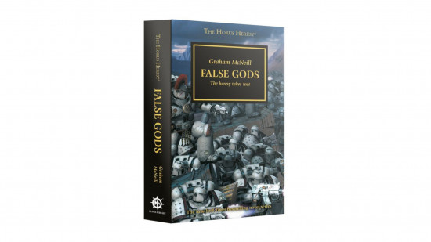
2. False Gods (Graham McNeill, 2006)
In False Gods, Horus is laid low on the moon of Davin, thanks to a plot by Erebus. In an effort to save his life, his loyal sons deliver him into the clutches of a cult devoted to the ruinous powers of Chaos. Horus awakens a changed man.
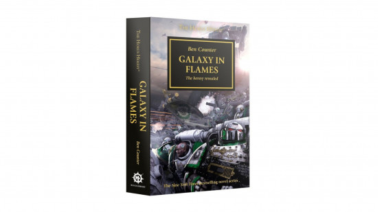
3. Galaxy in Flames (Ben Counter, 2006)
In Galaxy in Flames Horus' treachery is laid bare. Horus and three other Space Marine primarchs - Mortarion of the Death Guard, Angron of the World Eaters, and Fulgrim of the Emperor's Children - send the elements of their legion still loyal to the Imperium to assault the world of Istvaan III, before virus-bombing the planet's surface. Some loyalists are forewarned and survive the assault, forcing the traitors to root them out in a gruelling siege.
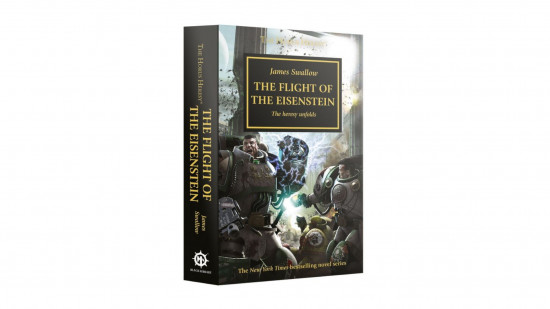
4. The Flight of the Eisenstein (James Swallow, 2007)
The Flight of the Eisenstein begins in the void above Istvaan III, as Captain Saul Garro of the Death Guard is alerted of the Warmaster's treachery. He escapes from the traitor forces in a small vessel and makes a desperate warp-jump towards Terra, harried all the while by the Plague God Nurgle, who has taken a great interest in his legion.
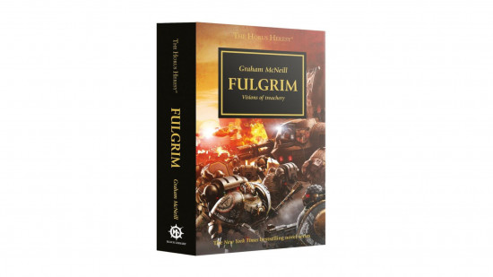
5. Fulgrim (Graham McNeill, 2007)
Fulgrim begins before the Heresy, following the perfectionist Emperor's Children Space Marines as they encounter a strange alien civilization that will change their destiny forever. Tempted by the powers of the warp, Fulgrim aligns with the traitor Warmaster.
The book then jumps back to after the events of Flight of the Eisenstein. An Imperial retribution fleet of seven legions arrives to crush Horus' rebel forces on the world Istvaan V. The leading three legions, the Salamanders, Ravenguard, and Iron Hands are set upon by the four traitor legions in their rearguard in the infamous 'dropsite massacre'. Fulgrim faces off against his once beloved brother Ferrus Manus of the Iron Hands in single combat, and slays him.
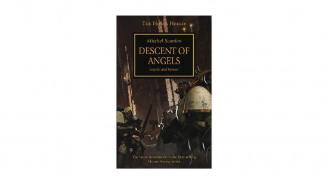
6. Descent of Angels (Mitchel Scanlon, 2007)
Descent of Angels is set before the outbreak of the Heresy. On the feudal world of Caliban, the knightly Order purge the great Chaos beasts that haunt the forests and terrorise the innocent. Their leader, the superhuman Lion El'Jonson, is a lost Primarch son of the Emperor, supported by his sworn brother Luther.
When Caliban is incorporated into the Imperium, the Lion is elevated to command of the Dark Angels Space Marine Legion. His former brother Luther chafes to see him risen so high, knowing he will forever lie in the Lion's shadow - and the seeds of a dire treachery are sown.
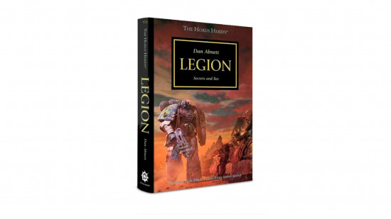
7. Legion (Dan Abnett, 2008)
Also set before the Heresy begins, Legion follows the covert Alpha Legion as they are contacted by agents of the mysterious Cabal. This interspecies Xenos alliance has grave news about the fate of the galaxy that can only be averted if the Imperium loses the coming civil war - knowledge that causes the ever-secretive and circuitous Alpha Legion to throw their lot in with the Warmaster for the strangest of reasons.
The book also introduces the concept of Perpetuals, beings which - like the Emperor - are functionally immortal, in the character of John Grammaticus.
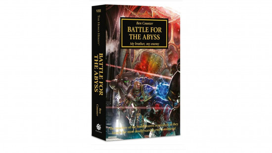
8. Battle for the Abyss (Ben Counter, 2008)
In Battle for the Abyss a hodge-podge band of Space Marines from different legions team up to destroy a Word Bearers super weapon. It's widely regarded as skippable.
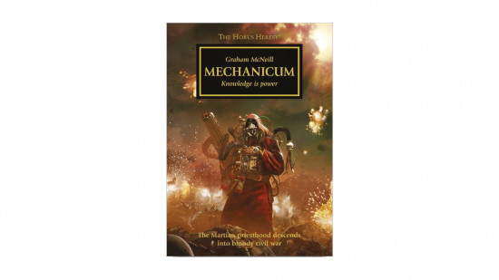
9. Mechanicum (Graham McNeill, 2008)
Kelbor Hal, Fabricator general of Mars and ruler of the Mechanicum tech priests, is beguiled with promises of forbidden lore to join Warmaster Horus' cause. Devastating scrap-code is unleashed across Mars, and all out civil war erupts within the Mechanicum, first on Mars and then across the entire galaxy.
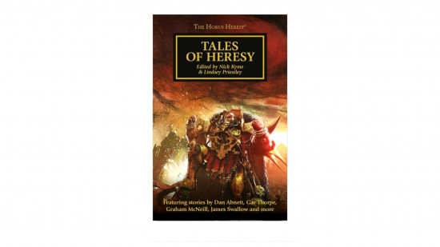
10. Tales of Heresy (multiple authors, 2009)
Tales of Heresy is a short story collection. It contains the notable story 'After Desh'ea', featuring the first, fatal meeting between the World Eaters and their ruined Primarch Angron.
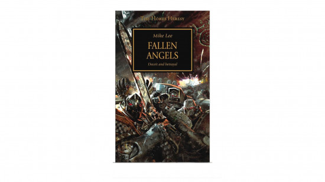
11. Fallen Angels (Mike Lee, 2009)
Fallen Angels is split into two, disconnected stories. When news of Warmaster Horus' betrayal reaches the Dark Angels, their legion is fully committed to a campaign against lethal xenos. Lion El'Jonson leads a lightning strike with the small part of his legion he can safely withdraw, to secure and deny powerful siege weapons from the Warmaster's advancing forces.
Meanwhile on the Dark Angels' home-world Caliban, Luther's discontent grows, conditions deteriorate, dire secrets are revealed, until the elements of the Legion banished from Jonson's side erupt into outright rebellion against the Imperium in defence of Caliban.
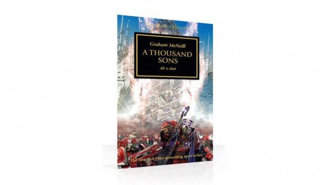
12. A Thousand Sons (Graham McNeill, 2010)
A Thousand Sons explores the history and motivations of the Thousand Sons, Legion of Sorcerers. Part of the novel is set before the Heresy, following the sorcerer Ahriman as he searches for a cure to the degenerative mutations that plague his Legion. The pursuit of answers drives the Thousand Sons to cross lines set for them by the Emperor - a decision that sees the Imperium's judgment descend upon their homeworld, Prospero, in the form of the Space Wolves.
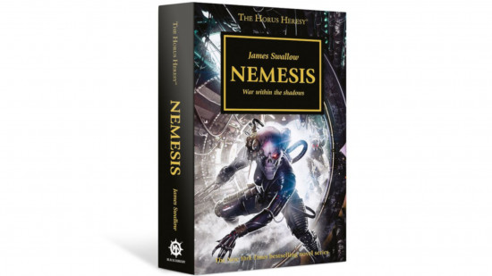
13. Nemesis (James Swallow, 2010)
Nemesis is a side story about a Kill Team of 40k Assassins attempting to bring down the Warmaster Horus. No surprises - it doesn't work. It has an early appearance of Constantin Valdor, Captain General of the Adeptus Custodes and the first of the Emperor's great biologically engineered superweapons.
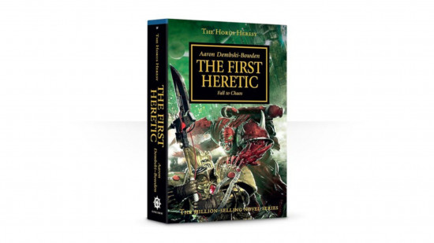
14. The First Heretic (Aaron Dembski-Bowden, 2010)
The First Heretic is set 50 years before the Heresy. Lorgar and the Word Bearers worship the Emperor as a god, a devotion which he rejects entirely. Lorgar is gripped by despair, but his adopted father Kor Phaeron and chaplain Erebus set him on a search for truth.
His investigations uncover the great warp rift known as the Eye of Terror and the malefic sentiences that lurk within. The ruinous powers of Chaos are all to happy to accept Lorgar's devotion. The novel concludes in the lethal events of the dropsite massacre at Istvaan V.
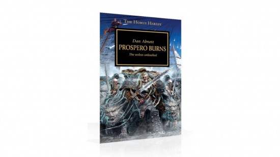
15. Prospero Burns (Dan Abnett, 2010)
Leman Russ and the Space Wolves Legion are despatched to bring Magnus the Red and the Thousand Sons Legion to justice. Told from the perspective of a human servant, it reveals the history of bad blood between the two legions, and the terrible events of the invasion that ensure the planet Prospero Burns.
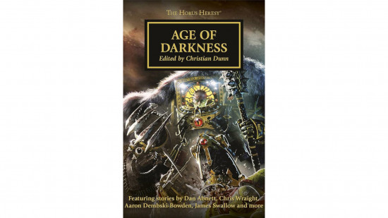
16. Age of Darkness (multiple authors, 2011)
Age of Darkness is a short story collection. Notable stories include:
- Little Horus, which hints that Garviel Loken may yet live;
- The Iron Within, which shows that not all Iron Warriors turned to the Warmaster's cause…
- Savage Weapons, a furious fight between the Primarchs of the Dark Angels and the Night Lords
- Face of Treachery, in which strange allies assist Raven Guard survivors in escaping from Istvaan V.
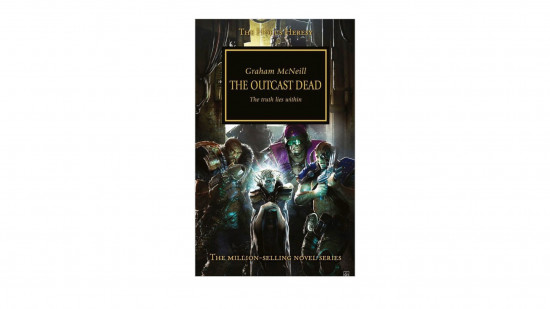
17. The Outcast Dead (Graham McNeill, 2011)
The Outcast Dead is a side story set in the underbelly of the Imperial Palace. Warriors from disgraced Legions, and the last surviving pre-Space Marine Thunder Warriors, band together to protect an Astropath who has learned a secret that threatens the outcome of the war.
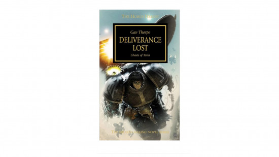
18. Deliverance Lost (Gav Thorpe, 2012)
Deliverance Lost follows the Ravenguard. After the Legion is almost wiped out during the drop site massacre on Isstvaan V, their primarch Corvus Corax seeks the secrets of the Emperor's gene alchemy to rebuild his legion. Agents of the Alpha Legion interfere, with terrible consequences.
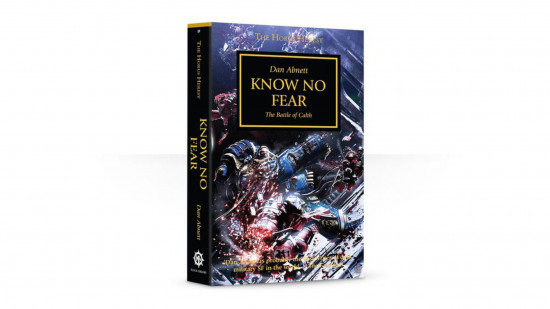
19. Know No Fear (Dan Abnett, 2012)
In Know No Fear, the Word Bearers spring a devastating betrayal on the Ultramarines, destroying masses of their forces on the planet Calth and isolating them from the wider war. Can the dauntless 13th Legion survive total annihilation?
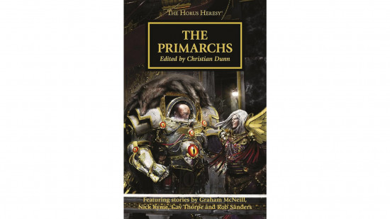
20. The Primarchs (multiple authors, 2012)
The Primarchs is an anthology of four novellas, each focused on a particular Primarch. Of particular note, in 'The Reflection Crack'd', the leading captains of the Emperor's Children attempt to rid Fulgrim of daemonic influence; in 'The Lion', the Dark Angels' war against the Night Lords becomes complicated by the involvement of two more Legions; and in 'The Serpent Beneath', the Alpha Legion invoke their most convoluted plot ever - to infiltrate the Alpha Legion.
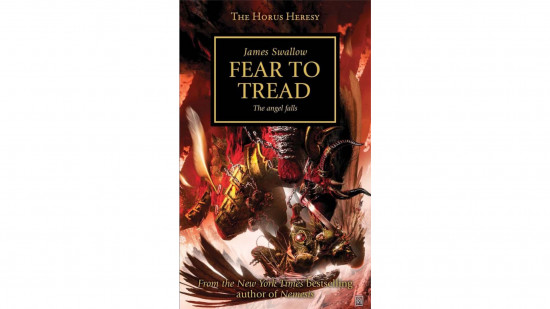
21. Fear to Tread (James Swallow, 2012)
In Fear to Tread, the noble but troubled primarch Sanguinius of the Blood Angels must face his daemons - the inner daemon of the red thirst, and the literal daemons of the blood god Khorne. Will he, and his Legion, resist the pull of Chaos?
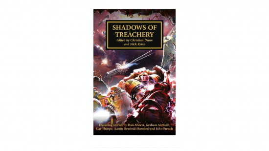
22. Shadows of Treachery (multiple authors, 2012)
Shadows of Treachery is a short story collection packed with noteworthy tales. In 'The Crimson Fist', you learn what became of the fleet Rogal Dorn despatched following the dropsite massacre; discover how Corvus Corax and the Ravenguard survivors were rescued from Istvaan V in 'The Raven's Flight'; and in 'Prince of Crows', learn how Sevatar aims to lead the Night Lords while the Night Haunter lies grievously wounded following a battle with Lion El'Jonson.
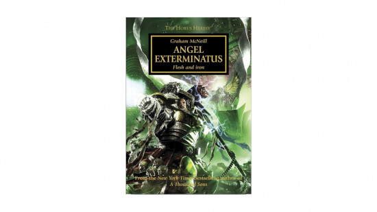
23. Angel Exterminatus (Graham McNeill, 2012)
In Angel Exterminatus, Fulgrim and the Emperor's Children enlist Perturabo and the elite Iron Warriors siege breakers to seek out an ancient Eldar war machine from within the Eye of Terror. Perturabo suspects a trap, but walks willingly into it, confident he can bring his brother to heel.
Meanwhile, survivors of the loyalist Legions shattered during the dropsite massacre on Istvaan V attempt to thwart their plans, with the aid of a mysterious Aeldari ally.
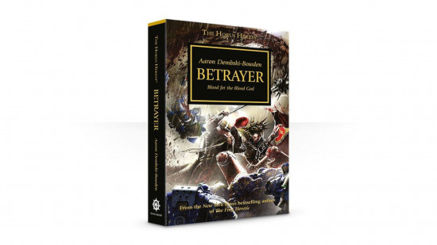
24. Betrayer (Aaron Dembski-Bowden, 2012)
Betrayer sees a joint campaign of Word Bearers and World Eaters terrorize the worlds of Ultramar. There is a ritual purpose to this campaign of terror, as Lorgar seeks the war-gods favor for his brother Angron. Features the best bromance in the series, between Khârn the Bloody of the World Eaters, and Argel Tal of the Word Bearers.
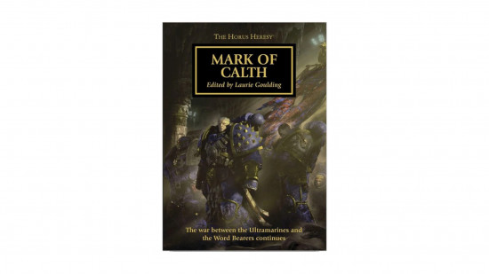
26. Mark of Calth (multiple authors, 2013)
Mark of Calth is a collection of short stories following the survivors of the Ultramarines and Word Bearer after the initial war on Calth, through a series of knife-point battles below the devastatingly irradiated surface of the world.
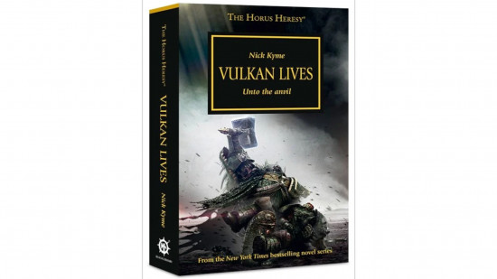
26. Vulkan Lives (Nick Kyme, 2013)
Believed slain on the fields of Istvaan V, Vulkan of the Salamanders is a perpetual - Vulkan Lives, because Vulkan cannot die. But as he is now imprisoned within a labyrinthine torture dungeon by his brother Konrad Curze, he may not appreciate this gift…
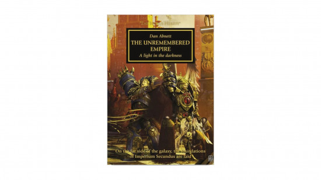
27. The Unremembered Empire (Dan Abnett, 2013)
Believing the Imperium already fallen, Roboute Guilliman founds a new Imperium Secundus in the Ultramar subsector, installing Sanguinius as Emperor. Can The Unremembered Empire survive its own inner struggle, as well as the depredations of the Warmaster and his forces?
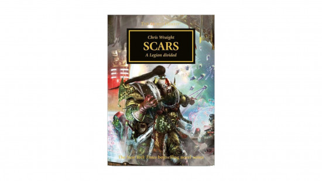
28. Scars (Chris Wraight, 2014)
The White Scars have always been an outsider legion on the fringes of the Imperium's Great Crusade. In Scars, a sudden surprise assault by the Alpha Legion on both them and the Space Wolves forces them to make a choice - will they side with the Warmaster, or the Emperor?
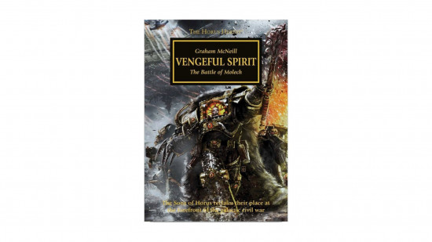
29. Vengeful Spirit (Graham McNeill, 2014)
Horus leads an assault on the Imperial Knight world of Molech. He seeks power beyond measure - power that he believes the Emperor himself may have drunk from. Garviel Loken, the last loyalist son of Horus, leads an infiltration mission to find and mark Horus' flagship, the Vengeful Spirit, for an assassination attempt.
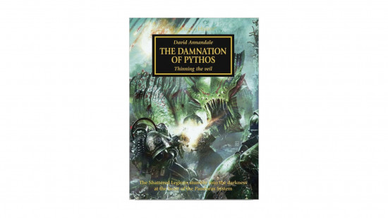
30. The Damnation of Pythos (David Annandale, 2014)
In The Damnation of Pythos, Space Marines from three legions who survived the dropsite massacre at Isstvan V regroup on a death world - but darker forces than alien megafauna threaten them.
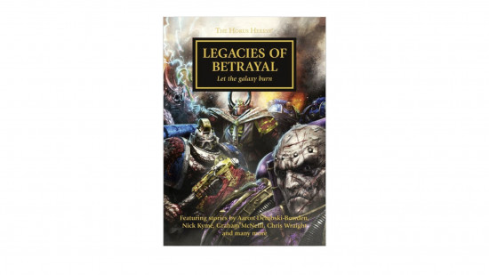
31. Legacies of Betrayal (multiple authors, 2015)
Legacies of Betrayal is a short story anthology packed with stories about characters who will endure into the 41st millennium. Learn more about Lucius the Eternal in 'The Faultless Blade', Khârn the Betrayer in 'Khârn: The Eightfold Path', and Bjorn the Fell-Handed in 'Bjorn: Lone Wolf'.
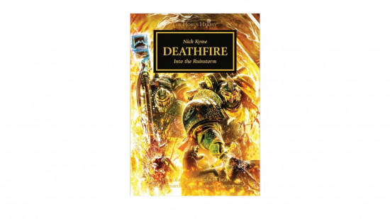
32. Deathfire (Nick Kyme, 2015)
Vulkan of the Salamanders lies dead, his body resting in state in the Ultramar sector. His sons must make the dangerous journey to their homeworld Nocturne to bring him to Mount Deathfire and attempt his resurrection.
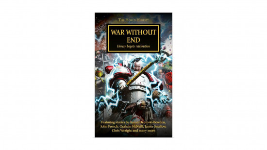
33. War Without End (multiple authors, 2016)
War Without End is a short story collection. It contains several key Emperor's Children short stories, and Twisted, which follows Horus' equerry Maloghurst as he contends with daemon-worshipping plotters and his uncertain future as the Warmaster's right hand man.
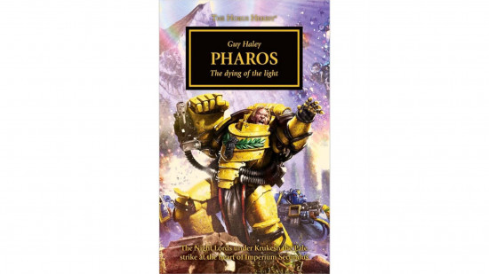
34. Pharos (Guy Haley, 2016)
The mysterious Xenos artefact known as the Pharos enables the worlds of Imperium Secundus to communicate, despite the ongoing tumult in the warp unleashed by Lorgar's Ruinstorm. Seeing nothing more than a convenient target, the forces of the Night Lords descend upon the beacon - the conflict that follows will have consequences millennia later.
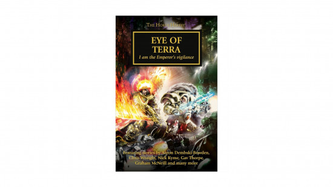
35. Eye of Terra (multiple authors, 2016)
Eye of Tera is a short story anthology. It contains several key stories, including 'Aurelian', which recounts Lorgar's pilgrimage into the Eye of Terror to speak with the representatives of the Chaos gods.
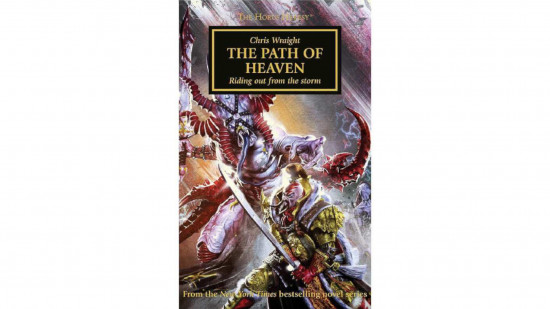
36. The Path of Heaven (Chris Wraight, 2016)
After four years of grinding war against the Death Guard, the White Scars must make a perilous voyage through the warp - The Path of Heaven - if they are to reach Terra in time to participate in the coming siege.
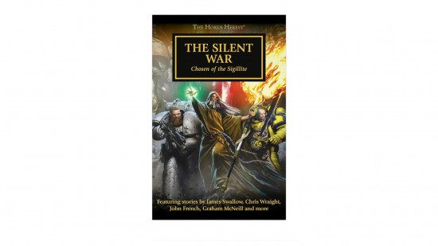
37. The Silent War (multiple authors, 2016)
A short story collection particularly focused on the agents of Malcador the Sigilite. Important stories include 'The Grey Angel', in which Garviel Loken travels to Caliban to try and gauge the loyalty of Luther of the Dark Angels; and 'Luna Mendax', in which Loken is visited by the ghost of his friend Torgaddon, slain by Abaddon.
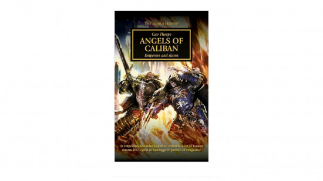
38. Angels of Caliban (Gav Thorpe, 2016)
In Angels of Caliban, Konrad Curze and the Night Lords terrorize Imperium Secundus. Lion El'Jonson's obsession with bringing him to justice almost tears apart the fragile alliance of Loyalist primarchs.
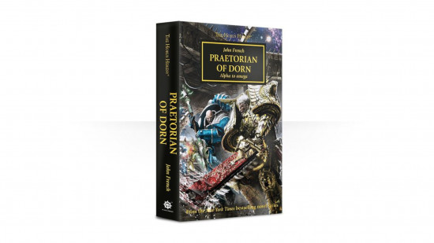
39. Praetorian of Dorn (John French,2017)
In Praetorian of Dorn, Rogal Dorn, Primarch of the Imperial Fists and castellan of the Imperial palace, musters the loyalist war in the Garmon cluster. Meanwhile, agents of the Alpha Legion stage their most audacious deception ever - if we wrote it down here you'd think we were making it up.
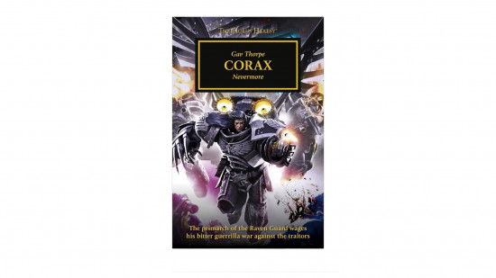
40. Corax (Gav Thorpe, 2017)
Corax is a collection of short stories and novellas that focuses on Corvus Corax and the Ravenguard legion, following his attempts to exact justice from the Warmaster in the wake of the betrayal at Istvaan III.
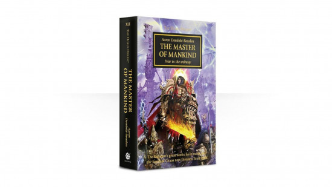
41. The Master of Mankind (Aaron Dembski-Bowden, 2017)
The Master of Mankin reveals why the Emperor of Mankind was absent from the front lines of the Horus Heresy. His great work, constructed in secret in the Imperial Dungeons, teeters on the brink of destruction - can the 10,000 warriors of the Adeptus Custodes hold back a tide of daemonic annihilation?
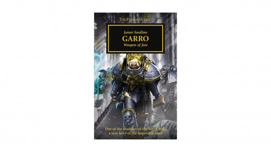
42. Garro, Weapon of Fate (James Swallow, 2017)
Garro, Weapon of Fate was originally released as several distinct audio dramas. Nathaniel Garro is a former legionary of the Death Guard. Now in the service of Malcador the Sigillite, right hand of the Emperor, he strikes out on covert missions across the galaxy. Several parts of this story take place earlier in the Heresy timeline, including the recovery of Garviel Loken after his presumed death on Isstvan III.
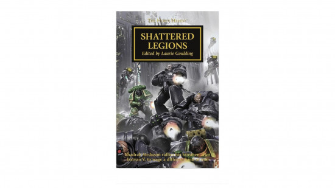
43. Shattered Legions (multiple authors, 2017)
Shattered Legions is a short story collection following the survivors of the dropsite massacre on Isstvan V as they lead a guerrilla campaign against Warmaster Horus, under the banner of Shadrak Meduson.
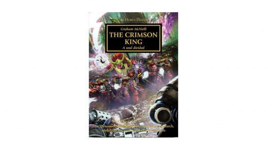
44. The Crimson King (Graham McNeill, 2017)
When Magnus the Red was bested by his brother Leman Russ during the burning of Prospero, not only was his body broken, but his spirit, too. In The Crimson King his sons seek the fractured fragments of their father's soul in an effort to restore him.
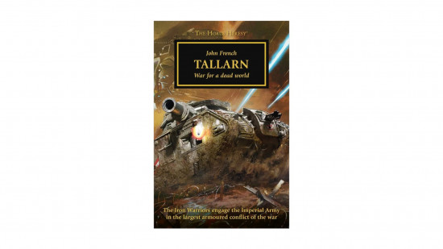
45. Tallarn (John French, 2018)
Without warning, the Iron Warriors fleet arrives above the forgotten Imperial staging world of Tallarn and virus bombs it into lifelessness. A few defenders survive to send word to the Imperium, and the planet becomes host to the biggest tank war in history. Though the Imperials will never know, Perturabo has a very personal objective on this world, one that he is willing to risk the wrath of the Warmaster to secure.
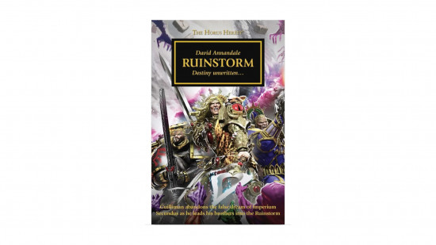
46. Ruinstorm (David Annandale, 2018)
Realising that the Imperium still stands and the Emperor lives, the three Primarchs of Imperium Secundus lead their forces into the deadly warp storm known as the Ruinstorm in an attempt to stand at their father's side. Will any of them make it to the Imperial Palace before the Siege of Terra begins?
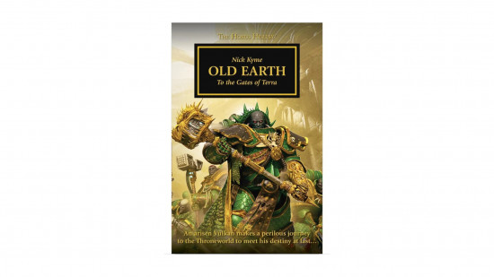
47. Old Earth (Nick Kyme, 2018)
Vulkan of the Salamanders must choose between leading the survivors of the shattered legions against the traitor forces, or following a path that will lead him to Terra, Old Earth, to fulfil some as-yet unknown duty during the siege to come.
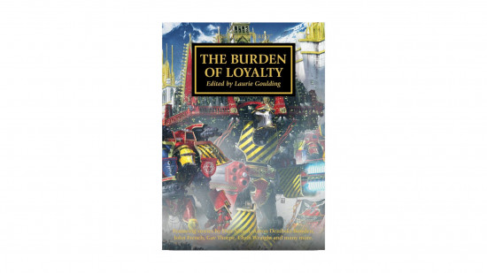
48. The Burden of Loyalty (multiple authors, 2018)
The Burden of Loyalty is a short story collection. Notable stories include 'The Wolf King', which sees the Space Wolves harried by the forces of the Alpha Legion before they have recovered from the disastrous burning of Prospero; and 'The Binary Succession', in which the political mess of the Martian civil war creates new fault lines in Imperial politics that will have ramifications for millennia to come.
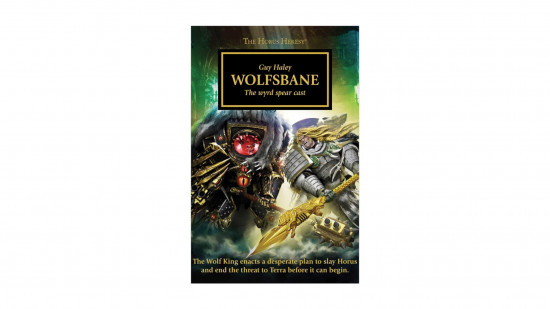
49 . Wolfsbane (Guy Haley, 2018)
Wolfsbane explains why the Space Wolves were not present during the Siege of Terra. Rather than stand on the walls of the palace, Leman Russ leads the Space Wolves to seek the traitor Warmaster's heart. Can the Emperor's Executioner deal his traitorous brother a killing blow?
50. Born of Flame (Nick Kyme, 2018)
An anthology of novellas and short stories about Vulkan and the Salamanders legion, several of the tales in Born of Flame act as prequels to the Salamanders series of Warhammer 40k books.
51. Slaves to Darkness (John French, 2019)
In Slaves to Darkness, the Warmaster's forces muster at Ullanor, the site of the last great triumph of the Great Crusade. Horus is absent, fighting an unseen, inner war. His equerry Maloghurst bears the burden of command: sacrifices must be made if the Warmaster is to prevail.
Meanwhile, Lorgar makes a pilgrimage into the realm of Chaos to retrieve Fulgrim from his indulgences, and Perturabo extracts himself from the rearguard campaign he is fighting against the Ultramarines to bring his brother Angron and the World Eaters to heel.
52. Heralds of the Siege (multiple authors, 2019)
Heralds of the Siege is a short story collection with several key stories: 'Children of Sicarus' follows Kor Phaeron of the Word Bearers as he grapples with his destiny within the Eye of Terrror; and 'Now tolls Midnight' follows the great leaders of the Imperial defence as they realise the forces of Horus have finally arrived in the Sol system - it's truly gripping.
53. Titandeath (Guy Haley, 2019)
Titans in numbers never seen before make war in the Garmon cluster, the last bulwak before the traitors reach the Sol sector. The heart of the novel tracks the hatred between two Titan legions, Legio Solaria and Legio Vulpa, and rival Princeps with a shared past. Meanwhile, Sanguinius maneuvers the many Titan Legions at his disposal in an effort to break the Warmaster's hold on the cluster through a battle that will be known as the Titandeath.
54. The Buried Dagger (James Swallow, 2019)
The seeds of poison sewn in the Death Guard Legion by First Captain Typhus finally bear rotten fruit in The Buried Dagger. En route to the Sol System, the Death Guard fleet is becalmed in the warp, overtaken by an unending sickness that will not let them die. Primarch Mortarion will strike any bargain to deliver his Legion.
Between books 54 and 55, we transition into the endgame: the Siege of Terra series - an ultimate, epic conclusion to all the Horus Heresy's many plots, machinations, diversions, and peregrinations. Not to put too fine a point of it, it is brilliant, a relentlessly awesome pay-off that's better than just about everything that came before.
Warmaster Horus Lupercal and his vast armada of Chaos Space Marines, traitor 40k Titans, mortal cultists, and daemon allies have at last arrived at the Sol system to launch their final assault on Terra, aiming to kill and supplant the Emperor of Mankind himself.
There are eight full Siege of Terra novels, one of which is so big it's split into three parts, plus three novellas. All the main titles, and the novella Fury of Magnus, are essential reading. This is the crescendo and climax of the whole Heresy series, after all! And we start with…
55. The Solar War (John French, 2020)
In The Solar War, we see the chaos fleet overwhelm the solar system's outer defences, commanded by master strategist Perturabo of the Iron Warriors, and aided by warp sorcery that the relentlessly logical Dorn cannot anticipate.
Sons of the Selenar (Graham McNeill, novella, 2020)
In Sons of the Selenar, the remnants of the shattered legions, led by Shadrak Meduson, attempt one last mission, to stop the Sons of Horus from claiming the genetic alchemy of the Selenar genecults on Luna. This is very important for 40k lore, but only essential reading if you've particularly enjoyed the Shattered Legions stories.
56. The Lost and the Damned (Guy Haley, 2020)
In The Lost and the Damned, the traitor forces bombard the planet from orbit to the point of environmental destruction, before launching their ground assault on the continent-sized defensive trenchworks surrounding the Imperial Palace.
The attack is led by Mortarion and the Death Guard, joined by his brother Angron of the World Eaters, now a rage-fuelled, daemonic demigod of destruction. Blood Angels primarch Sanguinius flies to the defenders' aid at key points, but the conclusion is never in doubt.
After a heroic effort, the mostly human Imperial Army defences are overwhelmed.
57. The First Wall (Gav Thorpe, 2020)
The First Wall opens with a new focus: the outer walls of the Imperial Palace itself, defended by Rogal Dorn's yellow-clad legion of Imperial Fists.
The keystone is protecting the Lion's Gate spaceport - Terra's biggest port facility, vital if any loyalist reinforcements from the Ultramarines or Dark Angels are to be deployed en masse. But if it's captured by Horus' forces, the traitors can land their Titan legions on the surface with little contest…
58. Saturnine (Dan Abnett, 2022)
The Imperial Palace (more a thousand-mile-wide fortress city than a building) has many rings of vast walls and gunlines for the traitor host to fight through and, while they do, each side is watching the clock, watching the skies for incoming Ultramarines, and searching for a cunning master-stroke strategy to turn the tables. Abaddon the Despoiler believes he has found a lethal weakness in the Saturnine wall section that will allow him to end the war in a stroke.
Fury of Magnus (Graham McNeill, novella)
In Fury of Magnus, Magnus the Red seeks an audience with his father - or, perhaps, his father is seeking an audience with him. Is there any possibility of redemption for a son so far fallen to ruin? Essential reading.
59. Mortis (John French, 2023)
If you like hundred-foot-high battle robots, John French's Mortis is the perfect book. With the traitors in control of the Lion's Gate spaceport, Horus can finally deploy his titans. The loyalists muster their remaining titan legions in turn, as well as the awful, secret weapons of the Legion Sinister, leading to jaw-dropping engine-on-engine battles in the blasted ruins of the Outer Palace.
Garro: Knight of Grey (James Swallow, novella)
Amid the ruins of the Imperial Palace, Nathanial Garro, Knight of Grey struggles to protect Euphrati Keeler, the first saint of the Imperial Church. He will face off against his greatest foe, his genefather, Mortarion, Primarch of the Death Guard.
60. Warhawk (Chris Wraight, 2023)
Chris Wraight's Warhawk is a love letter to Jaghatai Khan and the White Scars. With the traitors closing in on the Inner Palace, the praetorian of Terra Rogal Dorn commands all remaining forces to converge on defensive positions and hold out as long as they can.
But the White Scars don't like huddling behind walls, and instead sally out to forestall the traitor advance. Watch out for one of the series' best primarch grudge matches.
61. Echoes of Eternity (Aaron Dembski-Bowden, 2023)
ADB's Echoes of Eternity is gripping as only the end of a siege can be: think 'Aragorn and Théoden in the Hornberg with the Uruk-Hai banging on the door'. Horus' forces have breached the Inner Palace and are advancing on the Imperial Sanctum - the core building within which the Emperor sits on his Golden Throne.
The Imperial Fists are all but slaughtered; the remaining White Scars are penned into the faraway Lion's Gate spaceport by the Death Guard; the Blood Angels are mostly spent, and beating a fighting retreat. Reinforcements from the Ultramarines appear nowhere near. The end is nigh - but the loyalists fight on. And Sanguinius proves that he is, bar none, the biggest badass among the loyalist Primarchs, with a drawn out slugfest of epic duels one after the other.
62. The End and the Death Volume I (Dan Abnett, 2023)
The final Horus Heresy Siege of Terra book - The End and the Death -is so massive that it's split comes in three volumes. The Imperium's last defenders are dwindling, and Warmaster Horus's final victory seems inevitable. Many, many plots converge at this point, while at the same time reality itself begins to crumble.
But, at long last, the Emperor rises from his throne to take the fight to his fallen son aboard the Vengeful Spirit.
63. The End and the Death Volume II (Dan Abnett, 2023)
The Warmaster is far more powerful than even the Emperor realised. The mighty forces mustered in the Emperor's Anabasis assault - Custodians, Blood Angels, Imperial Fists, two Primarchs and Captain General Valdor of the Custodes - are scattered, each tempted by a different Chaos god.
The Imperial Palace is swimming with blood; Terra itself is sinking into the Warp; and Vulkan stands vigil, poised to destroy it all rather than allow Horus his victory. Many characters have roles to play that they do not fully comprehend. And Sanguinius, noblest son of the Emperor, goes to face his brother Horus, and his prophesied death.
64. The End and the Death Volume III (Dan Abnett, 2024)
The final war unfolds on all fronts. Time itself is dying. Terra is melting into the Inevitable City of the Warp. The death of Sanguinius tears apart the minds of the surviving Blood Angels. Valiant heroes fight impossible odds amid the ruins of the Imperial palace to relight the psychic beacon of the Astronomican. When the Emperor and Horus meet in final battle, the Gods themselves are watching…
The End and the Death is merely the start of the horror that is the Warhammer 40,000 universe, but it is a triumphant conclusion to an utterly epic saga. It's some of Dan Abnett's most intense, focused, and visionary work. Newcomers to the franchise won't be able to access all it has to offer, as it relies on a lot of established knowledge - but if you're very invested in Warhammer 40k or the Horus Heresy, it's a true masterpiece of epic science fiction.
65. Era of Ruin (multiple authors, 2025)
Era of Ruin is an anthology of short stories that take place during the dying days of the Siege of Terra, and in the immediate aftermath, as the survivors grapple with what has become of the Emperor's dream. The novel contains the following stories:
- Angels of Another Age by John French.
- Fulgurite by Nick Kyme.
- Fragments (All We Have Left) by Dan Abnett.
- Ex Libris by John French.
- System Purge by Gav Thorpe.
- After the Dawn, the Darkness by Guy Haley.
- Homebound by Chris Wraight.
- The Carrion Lord of the Imperium by Aaron Dembski-Bowden.
The Scouring books
You could be forgiven for thinking that, after 65 mainline novels (not counting all the novellas and extras we list below) Games Workshop would be done with this story. But you'd be wrong, because in Summer 2025 it announced a whole new follow on series about The Scouring: the long, painful aftermath of the Heresy War.
It's a tale of extreme political turmoil, clashing ideologies, ultra-violent crusades of revenge against the fleeing Chaos armada, and - ultimately - the story of how the surviving loyalist primarchs went their separate ways, and the Imperium began its long decline into the far-future dystopia we know now.
Only one book is out for The Scouring so far, but it's really good.
1. Ashes of the Imperium (Chris Wraight, 2025)
Chris Wraight's Ashes of the Imperium immediately sets our expectations high for The Scouring, depicting an Imperium (ironically) in chaos.
The Emperor survived, but his near death condition is a secret from all. The battle for Terra is won, but the throne world is devastated almost to the point of being uninhabitable. Horus is dead, his traitor armies fleeing - but the surviving loyalist primarchs can't seem to agree on anything at all, let alone how or when to pursue and destroy the foe.
Meanwhile, the mortal human leaders of the Imperium are beginning to do what humans do best: vie for power. In the Emperor's absence, every imperial authority from the primarchs down is looking to cement its own place at the top of the emerging New Order. With the primarchs disunited, and a growing tide of public anger against the Emperor's sons for causing this apocalyptic war in the first place, the knives are out to see who gets to shape humanity's rebirth from the, er, ashes.
Where the Siege of Terra was an extended, melodramatic war story, The Scouring is kicking off as a far more human, political drama. And it absolutely slaps.
Reading order for each of the Space Marine Legions
No fewer than 18 vast legions of transhuman warriors fight it out across the many Horus Heresy novels, and each has its own distinct main characters, storylines, and styles. You're bound to find yourself loving some, and despising others. These curated lists will help you find the best novels about your favorite marines, and work out the right order to read them in.
We've included all of the novels and short stories that make a major contribution to each faction, including stories that advance the plot of a legion significantly but only feature them as an antagonist.
Not every story from the Heresy is included: some books and many short stories are self-contained and don't advance any major plots. Some books appear in multiple reading lists, as they tell two (or more!) sides of the same conflict.
If you haven't already, take a look at our complete guide to the Space Marine legions for a steer on which you'd like to follow in the books.
Dark Angels Horus Heresy reading order
Tensions fester in the heart of the Dark Angels legion, as the Primarch Lion'El Jonson's former mentor Luther foments rebellion within the legion.
The Dark Angels have the most twisting plot of any legion, as characters are murdered and replaced, loyalties swap, and the mantle of Cypher swaps from person to person. You should consider reading everything for the Dark Angels if you want to get the full story
- Descent of Angels
- Leman Russ: The Great Wolf
- Call of the Lion (collected in Tales of Heresy)
- Fallen Angels
- Savage Weapons (collected in Age of Darkness)
- Grey Angel (collected in The Silent War)
- The Lion (collected in The Primarchs)
- Prince of Crows (collected in Shadows of Treachery)
- Cypher: Guardian of Order (collected in Legacies of Betrayal)
- Master of the First (collected in Eye of Terra)
- Unremembered Empire
- By the Lion's Command (collected in War Without End)
- Angels of Caliban
- Ruinstorm
- Dreadwing (novella)
- Luther, First of the Fallen
Emperor's Children Horus Heresy reading order
The pursuit of perfection and unwitting exposure to a fell chaos artefact drives the Emperor's children to utter depravity.
- Horus Rising
- False Gods
- Galaxy in Flames
- Fulgrim
- Dropsite Massacre
- The Reflection Crack'd (collected in The Primarchs)
- Aurelian (collected in Eye of Terra) - mostly stars Lorgar, but has deep lore about Fulgrim
- Angel Exterminatus
- Imperfect (collected in War Without End)
- Chirurgeon (collected in War Without End)
- The Soul, Severed (collected in Heralds of the Siege)
- The Path of Heaven
- Slaves to Darkness
Iron Warriors Horus Heresy reading order
The sharp mind and wounded pride of Perturabo, Primarch of the Iron Warriors, slowly turns to paranoia and obsession, as he seeks the power and glory forever denied his Legion. Only the honour of breaking Rogal Dorn's fortification of the Imperial Palace will satisfy him.
- Dropsite Massacre
- The Crimson Fist (collected in Shadows of Treachery): The Iron Warriors interdict an Imperial Fists retribution fleet, but the battle does not go as Primarch Perturabo predicts.
- The Iron Within (collected in Age of Darkness)
- Angel Exterminatus
- Tallarn
- Slaves to Darkness
White Scars Horus Heresy reading order
An outsider to the other legions, Jaghatai Khan's loyalty to the Imperium is in doubt at the outbreak of the Heresy, but the scion of the White Scars knows the peril of Chaos too well. His road to stand beside the Emperor at Terra is long and hard.
- Brotherhood of the Storm (collected in Legacies of Betrayal)
- Scars
- Allegiance (collected in War Without End)
- The Path of Heaven
- The Last Son of Prospero (short story)
- Restorer (short story)
Space Wolves Horus Heresy reading order
The Emperor wants Magnus the Red brought to Terra alive, but Horus tricks Leman Russ of the Space Wolves into razing his home-world. When he learns of Horus' perfidy, Russ is determined to bring his spear to the Warmaster's heart.
- A Thousand Sons
- Prospero Burns
- Wolf King (collected in The Burden of Loyalty)
- Wolf's Claw (collected in Legacies of Betrayal)
- Scars
- Wolfsbane
- Weregeld (collected in Corax)
Imperial Fists Horus Heresy reading order
When the retribution fleet despatched to destroy Warmaster Horus at Istvaan V is consumed in the aftermath of the dropsite massacre, Dorn turns his legion's gaze to the fortification of Terra - but his most favored son has goals of his own.
- Sigismund - the Eternal Crusader
- The Lightning Tower (collected in Shadows of Treachery)
- Dropsite Massacre (for a very brief appearance of Dorn)
- The Crimson Fist (collected in Shadows of Treachery)
- Templar (collected in The Silent War)
- The Praetorian of Dorn
- Duty Waits (collected in Heralds of the Siege)
- Cthonia's Reckoning
- Now Peels Midnight (collected in Heralds of the Siege)
Night Lords Horus Heresy reading order
The Night Lords were the Imperium's terror troops. But only the will of their primarch Konrad Curze held them together- and as they turn on the empire they built, Curze descends into madness.
- The Dark King (collected in Shadows of Treachery)
- Dropsite Massacre
- Vulkan Lives
- Pharos
- The Painted Count (collected in Heralds of the Siege)
- Savage Weapons (collected in Age of Darkness)
- Prince of Crows (collected in Shadows of Treachery)
- Angels of Caliban
- Night Haunter
Blood Angels Horus Heresy reading order
The Primarch Sanguinius of the Blood Angels is an angelic being, tormented by dark desires. Resisting the allure of Chaos, he is haunted by visions of his own death, but they will not deter him from returning to stand with the Emperor.
- Fear to Tread
- Unremembered Empire
- Sins of the Father (collected in Eye of Terra)
- Herald of Sanguinius (collected in Eye of Terra)
- Angels of Caliban
- Ruinstorm
Optional, but recommended:
- Master of Mankind
- Bringer of Sorrow (short story)
Iron Hands Horus Heresy reading order
After the Dropsite Massacre on Istvaan V, the Iron Hands, Ravenguard, and Salamanders Legions are all but destroyed. Attempts to rebuild the legions are thwarted, but the survivors fight on as guerrilla warriors, led by Shadrak Meduson of the Iron Hands.
- Feat of Iron (collected in The Primarchs)
- Fulgrim
- Dropsite Massacre
- Veritas Ferrum (collected in Legacies of Betrayal)
- Angel Exterminatus
- Shattered Legions
- Damnation of Pythos
- Imperfect (collected in War Without End)
- Old Earth
World Eaters Horus Heresy reading order
A simple, brutal legion, the World Eaters are already psychotic killers at the outbreak of the Heresy. As the war progresses, their savagery attracts the attention of the blood god Khorne.
- After Desh'ea (collected in Tales of Heresy)
- Galaxy in Flames
- Lord of the Red Sands (collected in War Without End)
- Dropsite Massacre
- Butcher's Nails (collected in Legacies of Betrayal)
- Rebirth (collected in Age of Darkness)
- Betrayer
- Slaves to Darkness
- A Rose Watered with Blood (short story)
Ultramarines Horus Heresy reading order
Betrayed by the Word Bearers, the Ultramarines are isolated by warpstorms in the far galactic East. Believing Terra lost, their Primarch Roboute Guilliman founds Imperium Secundus to keep the dream of the Imperium alive.
- Know No Fear
- Macragge's Honour (graphic novel)
- Mark of Calth
- Betrayer
- The Unremembered Empire
- Pharos
- Angels of Caliban
- Ruinstorm
- Spear of Ultramar (Novella)
Death Guard Horus Heresy reading order
Mortarion, Primarch of the Death Guard, believes there is no hardship his legion cannot endure. Yet he is not ready for the rot that First Captain Typhon will unleash within his legion, nor the price that he must pay to save his sons.
- Galaxy in Flames
- Flight of the Eisenstein
- Dropsite Massacre
- Scars
- Daemonology (collected in War Without End)
- Vengeful Spirit
- The Path of Heaven
- Exocytosis (collected in Heralds of the Siege)
- The Buried Dagger
Thousand Sons Horus Heresy reading order
Magnus the Red, Primarch of the Thousand Sons, attempts to warn the Emperor of Horus' betrayal - but the sorcery he uses to reach the Emperor has terrible consequences. His attempts to escape Imperial retribution damn his legion.
- A Thousand Sons
- Prospero Burns
- The Crimson King
- The Fury of Magnus
Sons of Horus Horus Heresy reading order
Horus is slow to claim the gifts of Chaos, and the process almost destroys him.
- Horus Rising
- False Gods
- Galaxy in Flames
- Dropsite Massacre
- Little Horus (collected in Age of Darkness)
- Warmaster (collected in Legacies of Betrayal): Horus discusses his plans for the war with a mysterious audience.
- The Either (collected in Shattered Legions): Tibalt Marr, "The Either", seeks to slay the master of the Shattered Legions.
- Garro, Legion of One
- Grey Angel (collected in the Silent War)
- Luna Mendax (collected in the Silent War)
- Vengeful Spirit
- Twisted (collected in War Without End)
- Wolfsbane
- Slaves to Darkness
- Titandeath
Word Bearers Horus Heresy reading order
The Word Bearers were the first legion infected by Chaos and the masterminds of Horus' fall. Throughout the Heresy they embrace the powers of Chaos - but they are not the masters of it that they believe themselves to be.
- The First Heretic
- Dropsite Massacre
- Aurelian (collected in Eye of Terra)
- Know No Fear
- Macragge's Honour (graphic novel): Kor Phaeron, Dark Apostle of the Word Bearer's, flees from Ultramarines justice into the warp, arriving on a daemon world in the Eye of Terror.
- Betrayer
- Children of Sicarus
- Slaves to Darkness
Salamanders Horus Heresy reading order
Vulkan, Primarch of the Salamanders is thought slain on Istvaan V, but death does not come easily to the Primarch. Long trials eventually bring him to guard the Emperor's throne room during the Siege of Terra.
- Fulgrim
- Dropsite Massacre
- Scorched Earth (collected in Born of Flame)
- Vulkan Lives
- Deathfire
- Old Earth
Raven Guard Horus Heresy reading order
The Raven Guard Primarch Corvus Corax survives the massacre at Istvaan V and attempts to rebuild his shattered legion with technology from the Emperor. But fate will not be kind to his legion…
- Fulgrim
- Dropsite Massacre
- Raven's Flight (collected in Shadows of Treachery)
- Face of Treachery (collected in Age of Darkness)
- Deliverance Lost
- The Divine Word (collected in Legacies of Betrayal)
- Corax
- Valerius (collected in Heralds of the Siege)
Alpha Legion Horus Heresy reading order
Everything you know about the Alpha Legion is a lie. Their interventions throughout the Heresy are mysterious and contradictory - but are they really traitors?
Novels from the perspective of the Alpha Legion are rare, and those sometimes include operatives with mind-wipes to hide their own objectives from themselves.
- Legion
- Dropsite Massacre
- Hunter's Moon (collected in Legacies of Betrayal)
- Wolf King (collected in The Burden of Loyalty)
- The Face of Treachery (collected in Age of Darkness)
- Deliverance Lost
- The Serpent Beneath (collected in The Primarchs)
- Scars
- Tallarn
- The Seventh Serpent, collected in Shattered Legions
- Castellan of Dorn
Adeptus Mechanicus Horus Heresy reading order
Kelbor Hal, fabricator General of Mars, is lured to the traitor cause by access to forbidden lore. A schism erupts on Mars, with loyalists fleeing to Terra. What will become of the Martian Empire now that it is denied its homeland?
- Mechanicum
- Into Exile (collected in The Burden of Loyalty)
- The Binary Succession (collected in The Burden of Loyalty)
- Master of Mankind
- Bringer of Sorrow (short story)
The Perpetuals Horus Heresy reading order
The Perpetuals touch on some of the deepest lore in the Heresy, but they're only ever side characters in other narratives. It's worth getting familiar with these characters though, as they have important roles to play in the Siege of Terra series.
| Book | Perpetuals |
| The First Heretic | Cyrene Valention |
| Legion | John Grammaticus |
| Know No Fear | John Grammaticus, Oll Persson |
| Unmarked (collected in Mark of Calth) | Oll Persson |
| Betrayer | Cyrene Valention, John Grammaticus |
| Vulkan Lives | John Grammaticus |
| The Unremembered Empire | John Grammaticus |
| Vengeful Spirit | Alivia Sureka |
| Wolf Mother (short story) | Alivia Sureka |
| Old Wounds, New Scars (short story) | Alivia Sureka |
| Old Earth | John Grammaticus |
Other Horus Heresy books
Games Workshop has published a variety of other books that expand the story of the Horus Heresy, covering events that are mentioned in the novels in greater detail, or filling in gaps in the story.
Horus Heresy era books
These novels and short story collections follow events or characters during the era of the Horus Heresy, but weren't published in the original numbered Horus Heresy novels. We've put them in chronological order, and suggested when they could be read relative to the rest of the Heresy.
- Valdor: Birth of the Imperium - not counting flashbacks, this novella is set earlier than anything else in the Horus Heresy, prior to the discovery of any of the Primarchs.
- Sigismund: the Eternal Crusader - set near the end of the Great Crusade, while Horus is Warmaster but before he has turned traitor.
- The Dropsite Massacre - a full novel that recounts the Dropsite Massacre at Isstvan V near the outset of the Heresy. Follows on directly from book 4, The Flight of the Eisenstein, and overlaps with sections of book 5, Fulgrim, and book 14, The First Heretic.
- Cthonia's Reckoning - a short story collection - spans the Imperial Fists' occupation of the Sons of Horus' homeworld from partway into the Heresy until just prior to the Siege of Terra
- Dreadwing - a novella set after book 46, Ruinstorm, as the Dark Angels wage a punitive campaign against traitor homeworlds.
- Spear of Ultramar - a novella set after book 46, Ruinstorm, as the Ultramarines struggle to reach Terra before it's too late.
- Eidolon, the Auric Hammer - takes place immediately after book 51, Slaves to Darkness, after the traitors launch their armada towards the Sol system.
- Luther: First of the Fallen - the framing device for this story occurs at some point long after the Heresy, but it is mostly a series of flashbacks which occur after the death of Horus, during Lion El'Jonson's retribution attack on Prospero.
The Primarchs
The Primarchs collection is, for the most part, a prequel series to the Horus Heresy, exploring either the origins or formative battles of each of the Emperor's sons. The stories are told in a variety of ways, so some of them are depicted as flashbacks, and have information from after the Heresy.
- Roboute Guilliman: Lord of Ultramar
- Leman Russ: The Great Wolf
- Magnus the Red: Master of Prospero
- Perturabo: The Hammer of Olympia
- Lorgar: Bearer of the Word
- Fulgrim: The Palatine Phoenix
- Ferrus Manus: The Gorgon of Medusa
- Jaghatai Khan: Warhawk of Chorgoris
- Vulkan: Lord of Drakes
- Corax: Lord of Shadows
- Angron: Slaves of Nuceria
- Konrad Curze: The Night Haunter
- Lion El'Johnson: Lord of the First
- Alpharius: Head of the Hydra
- Mortarion: the Pale King
- Rogal Dorn: The Emperor's Crusader
- Sanguinius: The Great Angel
Additionally, there have been several anthologies of short stories that are considered part of 'The Primarchs'. The most comprehensive collection is Heirs of the Emperor, which collects the three previous volumes Sons of the Emperor, Scions of the Emperor, and Blood of the Emperor, together with five other uncollected short stories.
Macragge's Honour - graphic novel
After the Betrayal at Calth, Ultramarines aboard the Macragge's Honour pursue the traitorous Word Bearer Chaplain Kor Phaeron through the warp.
Visions of Heresy
The very first product Games Workshop published that was set in the Horus Heresy era was a card game, published via its subsidiary Sabertooth Interactive from 2003-2008. The art from the cards was republished in four 'Visions of Heresy' artbooks, along with lore notes by then head of IP Alan Merrett. All four books were republished in a single volume as 'Collected Visions' in 2007.
A second, larger edition of the collected Visions of Heresy was published in 2013, adding in new art created for the Horus Heresy books. A revised third edition was then published in 2018, again adding yet more art and lore.
The Art of Horus Heresy
In early 2024, Black Library published 'The Art of Horus Heresy', a 320 page art book containing the cover art of all of Black Library's Horus Heresy publications. Unlike Visions of Heresy, which focuses on the narrative of the Heresy war, this book puts more emphasis on the creative process behind each art piece.
Forge World Horus Heresy Black Books
Before the Horus Heresy miniature wargame was a mainline product for Games Workshop, it was supported by Forge World, Games' Workshop's specialist product manufacturer. Between 2012 and 2020 Forge World released nine deluxe 'Black book' rulebooks.
They were expensive at the time, and their second-hand prices are eye-watering. As well as game rules, these contain extensive details on specific warzones, written int he style of a military history, often going into greater depth than any of the Horus Heresy novels.
Book one - Betrayal
Betrayal covers the dreaded 'Betrayal on Istvaan III', when the Sons of Horus, Death Guard, World Eaters, and Emperor's Children purged the loyalist elements of their legion in a gruelling siege.
Book two - Massacre
Massacre goes into greater depth on the 'Drop site massacre' than any single Horus Heresy novel. After news of the Istvaan III betrayal makes it to the Imperium, the traitor forces entrench on Istvaan V. The Imperial retribution force consists of seven legions: the first wave of the Ravenguard, Iron Hands, and Salamanders, followed by the Alpha Legion, Night Lords, Word Bearers, and Iron Warriors.
Unfortunately for the Imperium, the second wave of Legions have all sworn to the traitor cause. The loyal legions are all but wiped out, and the Primarchs Ferrus Manus and Vulkan are killed (albeit temporarily, in the case of Vulkan).
Book three - Extermination
In Extermination, the survivors of the dropsite massacre fight a furious guerrilla resistance while attempting to extract. The Iron Warriors picket at Phaal intercepts the Imperial Fists retribution fleet; while on Paramar, the fog of war sees Alpha Legion forces embattled against loyalist Iron Warriors..
Book four - Conquest
Conquest covers the Coronid Deeps campaign, a massive theatre of war in which the mainstay of loyalist resistance comes not from the Astartes, but the human Solar Auxilia and Knight households.
Book five - Tempest
Tempest explores the Battle of Calth, from the Word Bearers initial betrayal to the underground fighting after the near-destruction of Calth's sun.
Book six - Retribution
Retribution covers the shadow wars of sabotage and harassment fought by the legions shattered on Istvaan V, and the fate of other unaligned forces: the legionless Blackshields, and Malcador's Knights Errant.
Book seven - Inferno
Inferno reveals the full extent of the Burning of Prospero, with the forces of the Space Wolves and the Talons of the Emperor pitted against the psychic Thousand Sons, and the agents of the Warmaster Horus.
Book eight - Malevolence
Malevolence covers the Blood Angels' war in the Signus Clusteragainst the nascent demons of the ruinstorm; and the White Scars efforts to extract themselves from a campaign in the Chondax system when they are attacked by the Alpha Legion.
Book nine - Crusade
Crusade covers the Thramas Crusade that Lion El'Jonson and the Dark Angels waged against Konrad Curze and the Night Lords in the far Eastern fringes of the galaxy.
Adeptus Titanicus campaign books
In 2018, Games Workshop released Adeptus Titanicus, a wargame that pits maniples of massive Warhammer Titans against one another in lumbering mech brawls. While the core rules were light on fluff, the game's campaign books added detail about key conflicts and specific Titan Legions.
- Titandeath - the Battle of Beta-Garmon, which destroyed most of both forces of Titans were destroyed
- Doom of Molech - Horus Lupercal's assault on a world where the Emperor apparently stole power from the Chaos gods.
- Shadow and Iron - the traitor Shadow Crusade throughout the realm of Ultramar, and the loyalist Crusade of Iron in response.
- Defence of Ryza - the war for the Mechanicum's second largest Forge World, Ryza.
- Crucible of Retribution - the Mechanicum civil war within the Forge-World dense cluster known as the Belt of Iron.
Horus Heresy second edition campaign books
Games Workshop released a revised edition of the Horus Heresy wargame in 2022. The core rulebook provided an overview of the key events of the Heresy, and a selection of Liber books provided basic information about each of the factions. Campaign supplements went into more detail about specific warzones:
- The Siege of Cthonia - the Imperial Fists' occupation of the Sons' of Horus homeworld Cthonia, and the traitor efforts to retake it.
- Exemplary Battles of the Age of Darkness - a selection of battles, some of them previously described in free downloadable 'Exemplary Battles' PDFs.
- The Battle for Beta Garmon - The decisive battlezone in the war for the Garmon cluster, the final barrier between the Warmaster's forces and the Sol system.
- The Martian Civil War - the brief war on the surface of Mars, after the Fabricator General Kelbor Hal betrayed the conventional Mechanicum and sided with Warmaster Horus, forming the Dark Mechanicum.
Horus Heresy third edition Journals Tactica
For Horus Heresy third edition, Games Workshop is switching to releasing more and smaller expansions, called the Journals Tactica. The core rulebook and Liber army books all contain lots of lore, but the Journals go into more detail on specific small elements. At 48 pages long and softback, they're expected to be a lot more frequent than hardback releases, probably coming out once a quarter.
- The Istvaan V Dropsite Massacre Part One
- An as yet untitled volume will go into detail on Saturnine Terminator armor, including Thousand Sons psychic terminators and Word Bearers possessed terminators.
And that, for now, is it for our ultimate guide to the best Horus Heresy reading order. Did we miss something? Or have you just got a favorite book, series, or character you want to wax lyrical about with us? Join the Warhammer discussion on Wargamer's Discord community - we love debating the Heresy with fellow fans!
If you want more great stories of action, courage, and tragedy, we have another guide to the best Warhammer 40k books, and a set of recommendations on the best Warhammer 40k games on PC and console too.
You can also keep up with GW's newest reveals with our guides to the latest Warhammer 40k codex releases, and bookmark our Warhammer 40k news page for fresh updates daily.
Originally published on Wargamer.


{kind=link}
{kind=link}
{kind=link}
{kind=link}
{kind=link}
{kind=link}
{kind=link}
Leave a Comment